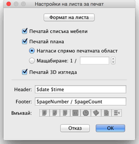
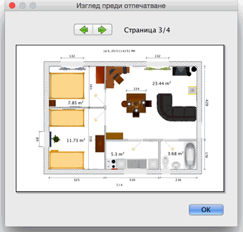

| Отпечатване на план | |||
|
За да отпечатате плана, изберете Файл
> Отпечатване.... По подразбиране, Sweet Home 3D отпечатва списъка с
поставените в плана обекти, плана и 3D изгледа в момента, ползвайки
настройките по подразбиране за големината на страницата, границите и
ориентацията на листа.  В менюто Настройки на листа за печат,
можете да промените големината на листа и
ориентацията му като цъкнете върху Формат на листа.
Можете да зададете поотделно да се печатат ли списъка с поставените
обекти, плана и 3D изгледа, или не. Ако не искате мащабирането на плана
да е автоматично с цел най-добро побиране в границите на листа, можете
да зададете друг мащабиране от полето Мащабиране 1:.
За да избегнете писането на имената на променливите, ползвайте съответните бутони, изобразени под полетата Header и Footer. Тъй като знакът $ е специален за тези променливи, въведете $$ ако искате да отпечатате един знак $. Преди да отпечатате плана, можете да видите как ще изглеждат отпечатаните страници, като изберете от менюто Файл > Преглед....  В панела Изглед преди отпечатване, ще видите как планът ще бъде отпечатан на листа. За да разгледате всички страници, цъкайте върху стрелките отгоре или ползвайте клавишите стрелки от клавиатурата. |
|